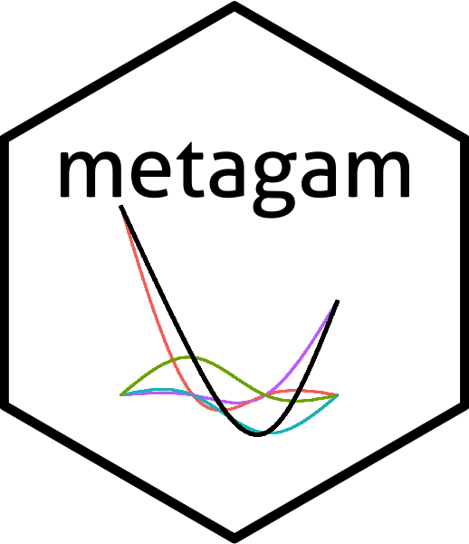

metagam (development versions)
Source:news.md
- Small internal fix for consistency with newest ggplot2 version.
- Added a workaround which allows not providing the unused variables when the terms argument is used.
metagam version 0.4.0
- Added a
meta_onlyoption toplot.metagam(). - Bug fix in plots.
- Added back label option for plot_dominance.
- A large number of internal changes which make package maintenance easier and the package more stable.
- Standard error of intercept is now included in simulations for p-values and simultaneous confidence intervals when type=“iterms”.
metagam version 0.3.0.9000
- Fixed a bug which caused metagam to crash when there were special characters (in particular ’_’ and ‘.’) in variable names.
metagam version 0.3.0
- This is a major revision of the package containing the changes described since 0.2.0 below.
metagam version 0.2.0.9002
- Large number of dependencies removed, to make the metagam less sensitive to errors in other packages and to make it easier to install on different platforms.
- Simultaneous confidence intervals have been added.
- Computation of p-values has been completely revised. The previous method would give nonsensical answers in cases where the effects pointed in different directions in different datasets.
- A vignette on p-values and simultaneous confidence intervals has been added.
metagam version 0.2.0.9001
- removed viridis from Suggests, to reduce the number of dependencies.
- removed gratia from Suggests.
metagam version 0.2.0.9000
- Parallelism support removed, because it was buggy. Will refactor the code before considering adding it back.
metagam version 0.2.0
- Proper support for parallelism added, thanks to Henrik Bengtsson. See example in help(“metagam”).
metagam version 0.1.2
- README is updated to suggest installation using Bioconductor
- A message is now printed to the user on startup if multtest is not installed. As a consequence, multtest has been added to Suggests: